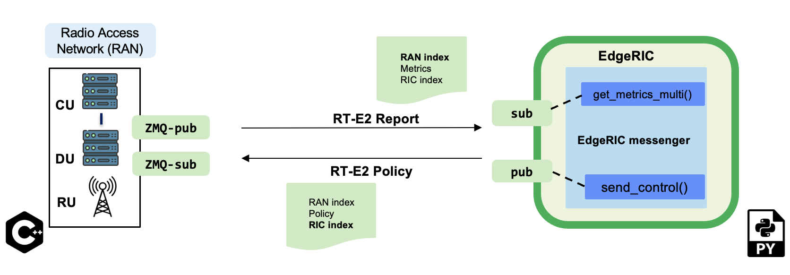
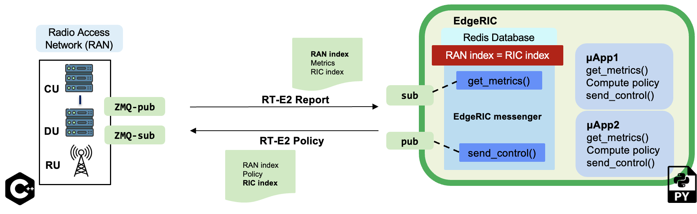

RT-E2 interface
RT-E2 agent (Real time E2 agent)
{kind=link}
- EdgeRIC adopts a low overhead messaging framework [RT-E2]
It is built on top of the ZMQ message passing library
- EdgeRIC maintains a TTI level synchronization with the RAN stack.
Our system is synchronized to the TTI-level clock tick from the RAN stack. The RAN stack uses a TTI counter, referred to as RAN index. It is included in all RT-E2 messages to EdgeRIC. EdgeRIC too maintains its own counter, called RIC index which increments by 1 every time it sends out its action. Our system is equipped with a default mechanism to ensure that EdgeRIC is slaved to the current RAN index or TTI by ensuring that the RIC index is always equal to the RAN index.
RT-E2 Report Message
The RT-E2 agent subscribes to the current RAN TTI to receive the realtime metrics
The RT-E2 report message includes per-UE key performance indicators (KPIs) received from the RAN. Each UE is identified by its unique RNTI (Radio Network Temporary Identifier) along with its corresponding KPIs.
Structure of the message:
ue_data followed by RIC ID and RAN ID.
Message Details:
ue_data: Dictionary containing per-UE metrics. Each entry is keyed by the RNTI of the UE and contains the following KPIs:
CQI: Channel Quality Indicator, reflecting the downlink channel quality.BL: Amount of backlog data waiting to be sent to the UE in the downlink.SNR: Signal-to-Noise Ratio in the uplink, indicating the quality of the uplink signal.Pending_Data: Data that is waiting to be sent in the uplink.Tx: The current downlink bitrate for the UE.Rx: The current uplink bitrate for the UE.
RIC ID: This is the RIC index
RAN ID: This is the RAN index or the TTI counter
Example Data Structure:
ue_data = {
1001: { # Example RNTI
'CQI': 15, # Downlink Channel Quality Indicator
'BL': 500, # Downlink Backlog Buffer in Bytes
'SNR': 20.5, # Uplink SNR in dB
'pending_data': 250, # Uplink Pending Data in Bytes
'Tx': 100 # Downlink bitrate in Mbps
'Rx': 100 # Uplink bitrate in Mbps
}
}
RIC_ID = 1
RAN_ID = 101
This structured message is critical for performance management and optimization of network resources in real-time applications.
RT-E2 Policy Message
Structure of the message:
μApp1-control-message, μApp2-control-message, RIC ID, RAN ID.
- Example message format:
μApp1-control-message—>UE1 RNTI,Action for UE1,UE2 RNTI,Action for UE2, …
EdgeRIC’s RT-E2 agent publishes the control actions to the RAN
REDIS database
EdgeRIC maintains a Redis database to receive learned models/ policy updates from cloud-based systems.
The database is also used to manage the lifecycle of microApps, which includes:
Tracking the number of microApps running: This allows EdgeRIC to allocate resources efficiently and ensure optimal operation of all active microApps.
Configuration based on user input: EdgeRIC configures microApps according to user-defined parameters. This flexibility allows users to tailor app behavior to specific needs.
Dynamic updating: EdgeRIC can update microApps on-the-fly based on new user inputs or changes in the operating environment. This feature ensures that microApps can adapt to evolving requirements without needing a system restart.
μApps - EdgeRIC microservices
{kind=link}
Each μApp{i} receives metrics by subscribing to the edgeric agent’s get_metrics_multi() function. Based on these metrics, it computes a policy for the specific network function and sends the decisions to edgerics agent’s send_control_μApp_i() function.
how to write μApps?
#### This is an example of a Downlink RBG scheduling μApp
import gym
import pandas as pd
sys.path.append(os.path.abspath(os.path.join(os.path.dirname(__file__), '..')))
import math
import time
from utils import *
import torch
import redis
from edgeric_agent import * #import edgeric agent
def compute_policy():
flag = False # to be deleted
ue_data = get_metrics_multi() #### subscribe to RAN's RT-E2 agent via EdgeRIC messenger to receive metrics
numues = len(ue_data)
weights = np.zeros(numues * 2)
RNTIs = list(ue_data.keys())
for i in range(numues):
# Store RNTI and corresponding weight
weights[i*2+0] = RNTIs[i]
weights[i*2+1] = 1/numues
send_control_μApp_1(weights,flag) #### send the scheduling control action to the EdgeRIC messenger
value_algo = "Fixed Weights"
if __name__ == "__main__":
while True:
compute_policy()